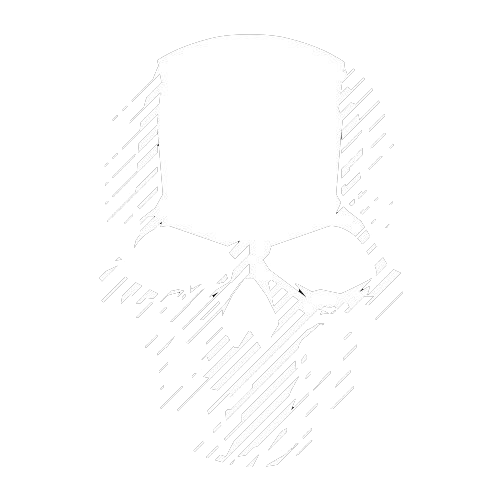

141 // TEMPORAL MONITOR
SIGNAL: UNSTABLE

RPG EM PAUSA
CONEXÃO INTERROMPIDA // CONTAGEM TEMPORAL ATIVA
STATUS:
RECUPERANDO TIMESTAMP DO DEPLOY...
00
DIAS
00
HORAS
00
MINUTOS
00
SEGUNDOS
DEPLOY START: --
⚠ SISTEMA: INTERFERÊNCIA DETECTADA
×
ARQUIVOS // PROJECT 1.4.1
▤
LIVRO DO JOGADOR
✦
ESPECIALIZAÇÕES
➤
O QUE ESTÁ A VIR
▤
LIVRO DO JOGADOR
▸ BAIXAR ARQUIVO
×
×